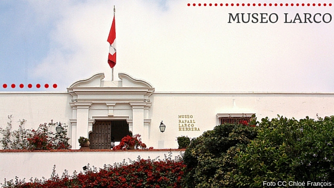

|
|||||
| Inicio | Gastronomia | Restaurantes | Discotecas | Museos | Iglesias |
MuseosMuseo de Arte ContemporáneoEl MAC Lima es el Museo de Arte Contemporáneo de Lima que fue fundando en el 2013 y hoy en día es el único de los museos de la ciudad centrado en promover y exponer el arte contemporáneo y moderno. Se encuentra en plena entrada de Barranco, un distrito artístico de Lima, en un área de más de 14 mil metros cuadrados en donde están los edificios del museo, una laguna artificial, el Café del Museo y extensas áreas verdes que hacen del MAC Lima un centro cultural de recreación en medio de la a veces caótica capital de Perú. Los orígenes del museo se remontan a 1955 con la creación del Instituto de Arte Contemporáneo (IAC), actual institución administradora del MAC Lima que por mucho tiempo realizó exposiciones en otros recintos artísticos de la ciudad. Pero a finales de los años 80 el IAC decidió construir un museo propio, objetivo que consigue en el 2013. Su diseño fue obra del arquitecto peruano Frederick Cooper Llosa quien le dio un aspecto modernista constituido por 3 módulos separados de formas rectangulares y con inmensos ventanales de vidrio en las paredes que permiten el reflejo de la laguna exterior dando una sensación de isla. TarifasLa entrada general cuesta 10 soles y la entrada preferencial para niños de 5 a 12 años y personas mayores de 65 años cuesta 4 soles. El acceso a los jardines exteriores es gratis. HorariosEl Museo de Arte Contemporáneo de Lima está abierto de Martes a Domingos a partir de las 10h hasta las 18h. El museo permanece cerrado los días 1 de Mayo, Jueves Santo, Viernes Santo, 24 de Diciembre, 25 de Diciembre, 31 de Diciembre y 1 de Enero. UbicaciónAvenida Grau 1511, Barranco, Lima 04, Perú. Cómo llegarUsando es sistema de bus Metropolitano hasta la estación Plaza de Flores. Al salir de la estación se debe caminar por la calle Carlos Arrieta unos 10 minutos hasta llegar a la avenida Grau donde se encuentra el museo.
|
|||||
Museo LarcoEl Museo Larco es un museo arqueológico que fue fundado en Julio de 1926 por el coleccionista peruano Rafael Larco Hoyle, quien es considerado uno de los precursores de la arqueología en el país. En sus inicios el museo se encontraba en la hacienda Chiclín al norte de Perú y en los años 50, su fundador decidió mudarse a Lima, y con él, su colección, buscando lograr una mayor difusión de su material arqueológico. Actualmente el museo se ubica en el distrito de Puerto Libre en una casona virreinal que data del año 1700, de fachada blanca y grandes puertas de madera que resguardan una de las colecciones más importante del Perú precolombino.  Tarifas El precio de las entradas es:
Horarios El Museo Larco está abierto de Lunes a domingo a partir de las 9h hasta las 22h, incluso los días feriados. Ubicación Avenida Bolivar 1515. Pueblo Libre. Lima 21. Perú. Cómo llegar Recomendamos usar servicios de taxi para llegar al museo Larco. El recorrido desde Miraflores puede tomar entre 15 y 30 minutos. |
|||||
Museo Pedro de OsmaEn una hermosa casona blanca de Barranco se encuentra el Museo Pedro de Osma, un museo histórico de arte virreinal fundado en 1987. Esta casona construida en estilo francés en 1906 era la casa de verano de los padres de Pedro De Osma. Luego de la muerte de sus padres, los hermanos Pedro y Angelica De Osma adquirieron este inmueble. En 1967 fallece Don Pedro y es Angelica quien hereda la propiedad que hoy día es administrada, al igual que el museo, por una fundación que lleva el nombre de ambos hermanos. TarifasPrecio de la entrada general: 20 soles. HorariosEl museo está abierto de Martes a Domingo de 10h a 18h. También se ofrecen visitas guiadas (incluidas en el costo de la entrada) que inician en los siguientes horarios:
UbicaciónAvenida Pedro de Osma 421, Barranco, Lima 04, Perú. Cómo llegarSi te hospedas en el distrito Barranco, se puede llegar al museo caminando. También recomendamos usar servicio de taxi para llegar al museo. El trayecto desde Miraflores o San Isidro puede tomar apenas 10 minutos. |
|||||